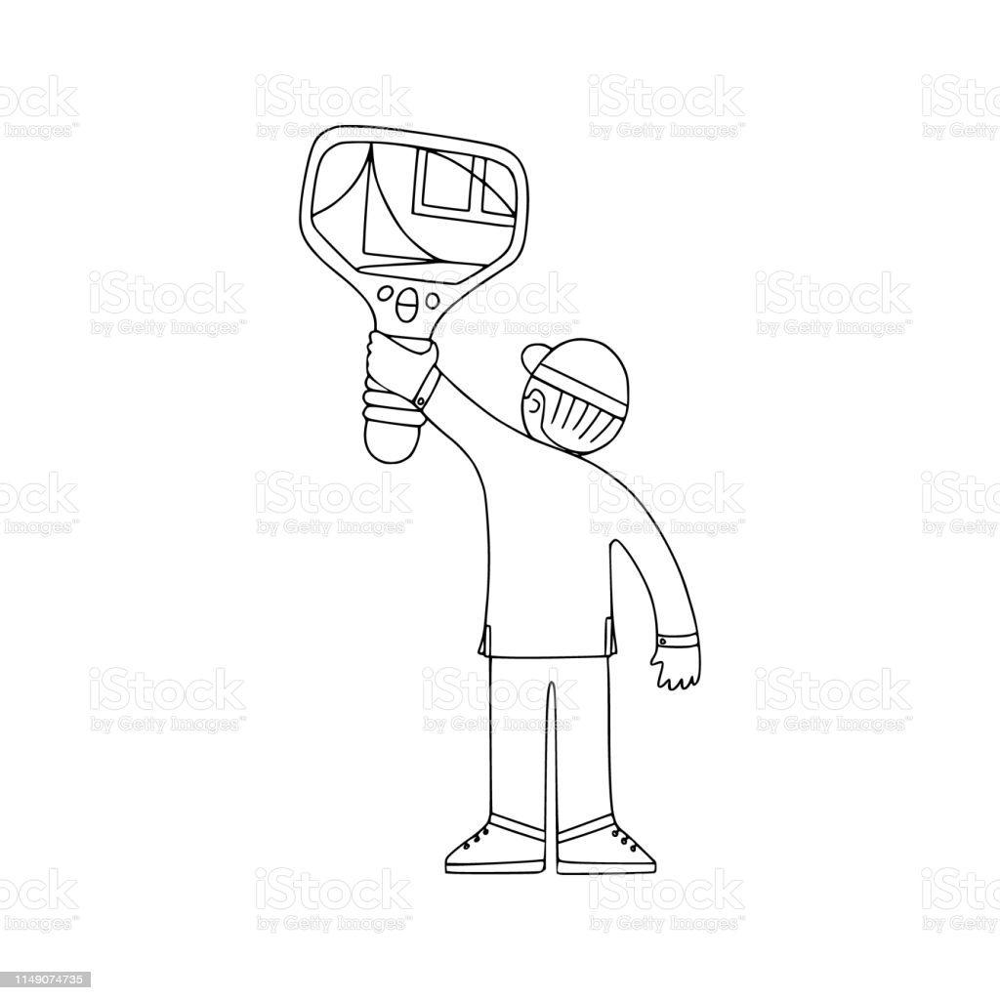

Providing a Range Commercial & Residential Services
There are many variants of passages of Lorem Impsum available, but the majarity have suffered alteration in some form, by injected humour
-
Electrical Testing
It is a long established fact that a reader will be distracted by the readable content of a page when looking at its layout. The point of using Lorem Impuls is that it has a more-or-less normal distribution of as apposed to using 'content here, contente here', making it
-
Cable Change
It is a long established fact that a reader will be distracted by the readable content of a page when looking at its layout. The point of using Lorem Impuls is that it has a more-or-less normal distribution of as apposed to using 'content here, contente here', making it
-
Emergy Survey
It is a long established fact that a reader will be distracted by the readable content of a page when looking at its layout. The point of using Lorem Impuls is that it has a more-or-less normal distribution of as apposed to using 'content here, contente here', making it
-
Security Alert
It is a long established fact that a reader will be distracted by the readable content of a page when looking at its layout. The point of using Lorem Impuls is that it has a more-or-less normal distribution of as apposed to using 'content here, contente here', making it